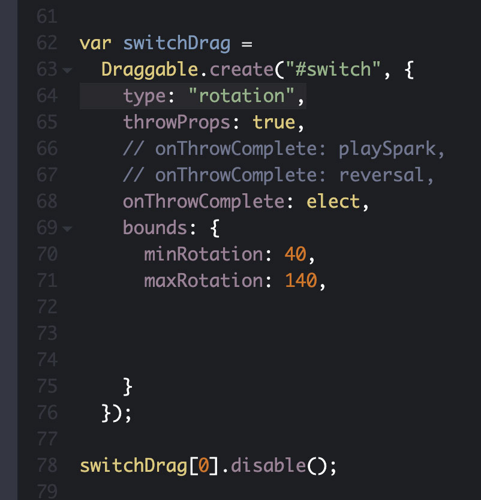
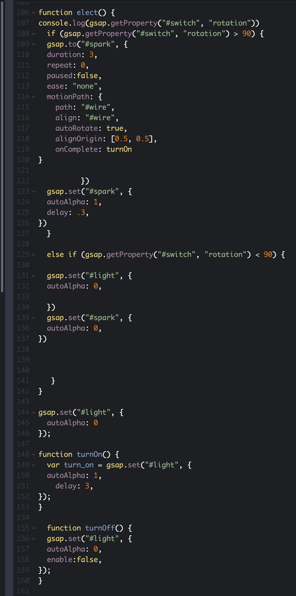

Front End Web Developer, UI/UX Developer, Interactive Designer
Front End Web Developer, UI/UX Developer, Interactive Designer
See the Pen Overly Complicated Light Switch Final by Matt Harrell (@mharrell8) on CodePen.
HTML
CSS
Javascript
JQuery
GreenSock
This is an interactive animation I created that uses counters and conditional statements to create an animation that only occur if certain interactions are completed.
I created a simple counter that would trigger the red light to change to yellow then if the counter went up again it would make the light turn green. A user could add to the counter by pulling the brown crank.

This is the function I wrote for the switch. After the counter hit 2, the switch would become interactive and could turn on/off the light.
This is the function I wrote after all the conditions are met and switch is in the on position would trigger a Motion Path and the light would turn on.
